السلسلة 10
الشاحنة (صنف C) · 20 سؤال بالصوت. حاول تجاوب بوحدك، من بعد شوف الجواب.
السؤال 1
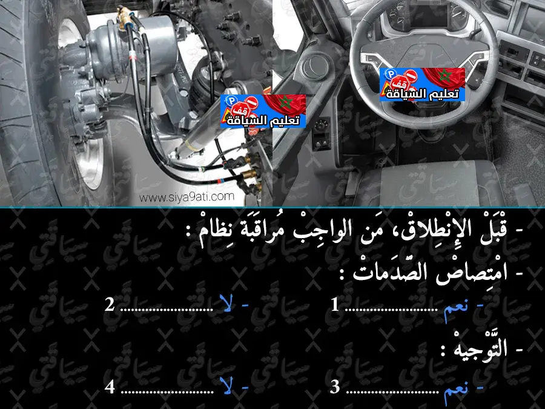
بيّن الجواب
الجواب الصحيح: 1 و 3
قبل ما ينطلق سائق الشاحنة، ضروري يدير مراقبة دورية لبعض الأجزاء الأساسية في المركبة، باش يضمن السلامة ديالو وسلامة باقي مستعملي الطريق. من بين هاد الأجزاء: نظام امتصاص الصدمات (Les amortisseurs): هذا النظام مهم بزاف فالشاحنة، حيث كيساعد في توازن المركبة فوق الطريق، وكيقلل من الاهتزازات عند المرور فوق الحفر أو المطبات. إذا كان فيه خلل، الشاحنة تقدر تفقد التوازن بسهولة، ويقدر يكون خطر كبير أثناء السياقة، خصوصاً فالمسافات الطويلة. التوجيه (La direction): نظام التوجيه هو اللي كيمكنك توجه الشاحنة وتحكم فيها يمين ويسار. إذا كان فيه مشكل أو خلل، ممكن يصعب عليك التحكم في الشاحنة وتولي القيادة خطيرة بزاف. 📌 الخلاصة: من الواجب على السائق يفحص نظام امتصاص الصدمات والتوجيه قبل الانطلاق بالشاحنة، لأن أي خلل فيهم ممكن يسبب حوادث خطيرة. إذن الجواب هو: نعم، خاص تراقبهم بجوج قبل ما تنطلق بالشاحنة. الجواب الصحيح هو رقم 1 و 3.
السؤال 2
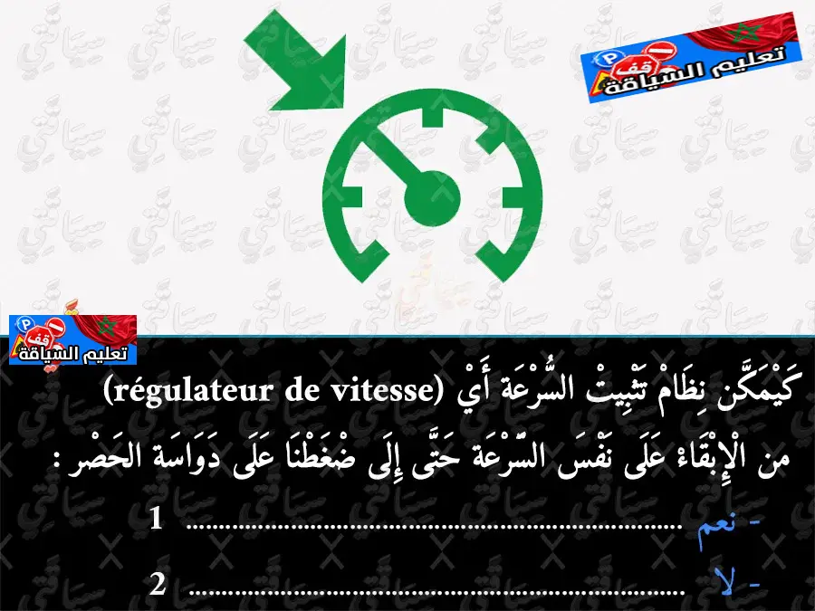
بيّن الجواب
الجواب الصحيح: 2
نظام تثبيت السرعة هو جهاز كيسمح لك تبقى غادي بنفس السرعة بلا ما تحتاج تضغط على دواسة الوقود (البيدال ديال المازوط أو البنزين). هاد النظام مفيد خصوصاً في الطرق السريعة والمسافات الطويلة لأنه كيريّح السائق. لكن، إلا ضغطتي على دواسة الحصر (الفرامل)، النظام كيتوقف أوتوماتيكياً وماكيبقاش خدام. يعني الشاحنة ما غاديش تبقى محافظة على نفس السرعة، بل كتولي تحت السيطرة ديالك من جديد. هاد الخاصية معمولة لأسباب السلامة، باش إذا احتاج السائق يفرمل، النظام يوقف فوراً ويخلي السائق يتحكم في السيارة بشكل كامل. الجواب الصحيح هو رقم 2.
السؤال 3
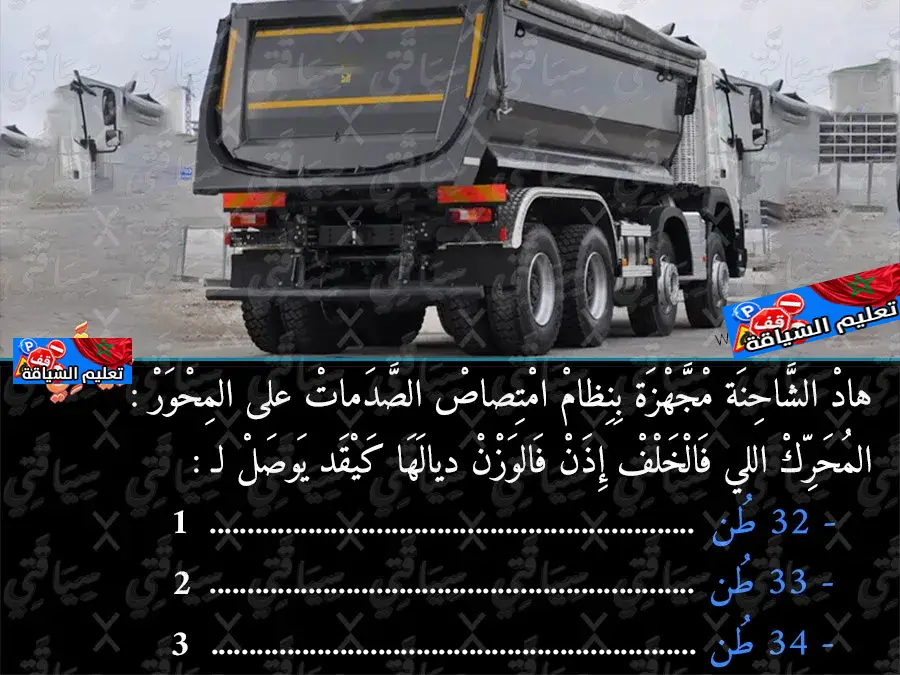
بيّن الجواب
الجواب الصحيح: 1
فالمغرب، حتى لو كانت الشاحنة فيها نظام امتصاص الصدمات على محور المحرك، الوزن الأقصى المسموح به قانونياً هو 32 طن. الجواب الصحيح هو رقم 1.
السؤال 4
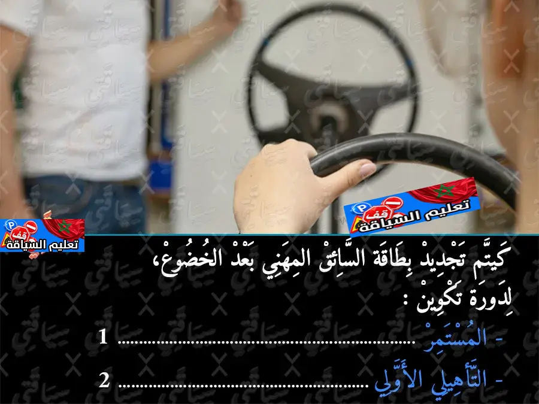
بيّن الجواب
الجواب الصحيح: 1
عندك بطاقة السائق المهني، منين تسالي مدة صلاحيتها وبغيتي تجددها، خاصك ضروري تدوز دورة تكوين. لكن هنا عندنا جوج أنواع ديال التكوين: التأهيل الأولي: هذا كيدوزو فقط السائقين الجدد اللي أول مرة غادي يحصلو على بطاقة السائق المهني. التكوين المستمر: هذا كيدوزو كل السائقين اللي عندهم البطاقة وبغاو يجددوها من بعد انتهاء الصلاحية ديالها. يعني: باش تجدد بطاقة السائق المهني، خاصك تدوز دورة التكوين المستمر (رقم 1). المرجع القانوني (مدونة السير المغربية): حسب المادة 314 من مدونة السير المغربية، والمادة 4 من المرسوم رقم 2.10.421 الصادر في 29 شتنبر 2010: -تجديد البطاقة المهنية يخضع السائق لدورة تكوين مستمر لمدة معينة حسب نوع النشاط المهني.- تجديد بطاقة السائق المهني كيتطلب تكوين مستمر، ماشي تأهيل أولي. الجواب الصحيح هو رقم 1.
السؤال 5
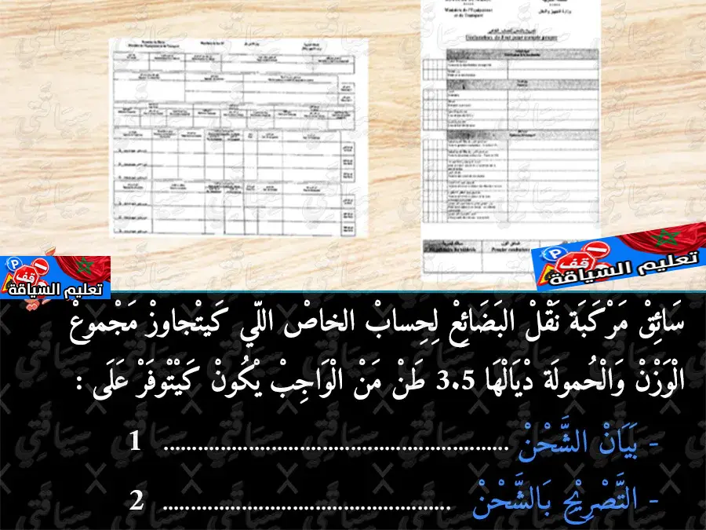
بيّن الجواب
الجواب الصحيح: 2
أي سائق مركبة نقل البضائع لحساب الخاص، ومجموع الوزن والحمولة ديالها كيتجاوز 3.5 طن، من الواجب عليه يتوفر على تصريح بالشحن، ماشي بيان الشحن. بيان الشحن (Le Bordereau de chargement): كيستعمل فقط في النقل المهني لحساب الغير (النقل التجاري). التصريح بالشحن (Déclaration de chargement): خاص بالنقل لحساب الخاص، وهو وثيقة قانونية كتثبت أن السائق كينقل البضائع ديالو الخاصة، ويحتوي على جميع المعلومات حول نوع وكمية الحمولة. المرجع القانوني (مدونة السير المغربية): حسب المرسوم رقم 2.03.169 المتعلق بنقل البضائع عبر الطرق (المادة 10): -يجب أن يوجد على متن كل سيارة نقل لبضائع لحساب الغير إذا كانت محملة... بيان الشحن. أما سيارات نقل البضائع لحساب الخاص فيجب أن تتوفر على تصريح بالشحن.- الجواب الصحيح هو رقم 2.
السؤال 6
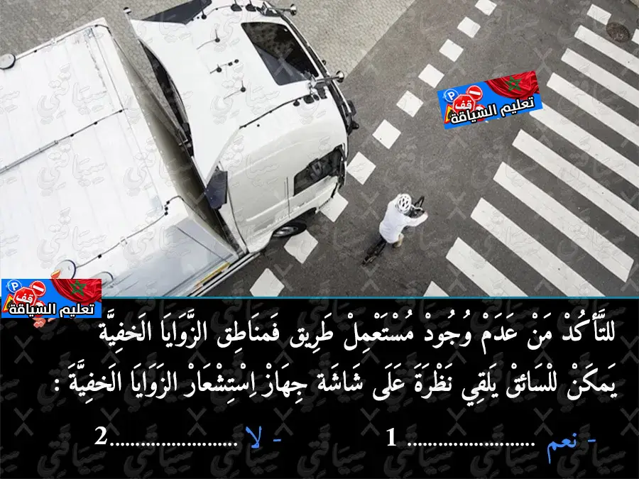
بيّن الجواب
الجواب الصحيح: 1
سائقي الشاحنات عندهم مشكل كبير في الزوايا الخفية بحكم طول الشاحنة وحجمها. باش يتأكد السائق من عدم وجود مستعمل طريق (سيارة، دراجة، موتوسيكل...) فالزوايا اللي ماكاتبانش في المرايا، بزاف من الشاحنات الجديدة مجهزة بجهاز استشعار الزوايا الخفية. هذا الجهاز فيه حساسات أو كاميرات كتعطي إنذار ضوئي أو صوتي، وأحياناً كيعطي حتى صورة أو مؤشر على شاشة قدام السائق، باش ينبهه إذا كان شي مستعمل طريق في المنطقة اللي ماكاتبانش. لهذا: السائق المهني (ديال الشاحنة) فعلاً يمكن يلقي نظرة على شاشة جهاز استشعار الزوايا الخفية، وهذا كيعاونه ياخذ قرار آمن قبل التجاوز أو تغيير المسار. الجواب الصحيح هو رقم 1.
السؤال 7
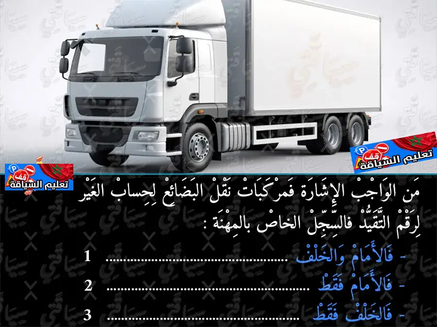
بيّن الجواب
الجواب الصحيح: 1
في مدونة السير المغربية، كل مركبة نقل البضائع لحساب الغير (النقل المهني)، من الضروري تعليق رقم التقييد في السجل الخاص بالمهنة على السيارة من الأمام ومن الخلف معاً، باش يكون واضح ومرئي للشرطة وأي مراقبة إدارية. هذا الإجراء كيهم الشاحنات ونقل البضائع اللي كتشتغل للنقل المهني فقط، هاد الرقم خاص بالمهنة، وكيميز الشاحنة وسط الشركات الأخرى، إذا كان الرقم غير ظاهر في الأمام أو الخلف، السائق أو صاحب الشركة معرض لمخالفة. الجواب الصحيح هو رقم 1.
السؤال 8
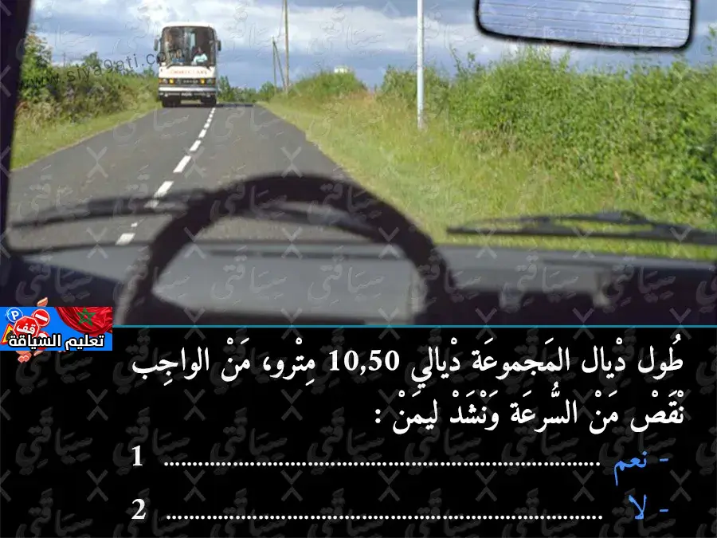
بيّن الجواب
الجواب الصحيح: 1
عندما نكون في طريق ضيق وكنشوف حافلة جاية من الاتجاه المعاكس، الواجب علينا هو تسهيل عملية التقابل. يعني: نقص السرعة ديالنا نشد ديما أقصى اليمين ديال الطريق ونراقب المسافة باش ما يكونش احتكاك أو خطر وإذا تطلب الأمر نوقف أو نبطئ باش تمر الحافلة بسهولة وأمان هذا التصرف كيتسمى سلوك حضاري وقانوني في التقابل، خصوصاً إذا كان الطريق ضيق أو الرؤية غير واضحة. وزيد على ذلك: إذا كنت كنقود مجموعة ديال الشاحنة مع المقطورة وطولهم كيتعدى 10,50 متر، هنا القانون كيزيد التشديد، حيث كيطلب مني ضروري ننقص من السرعة ونبقى ملتزم باليمين، باش ما نعيقش عملية التقابل مع المركبات الأخرى. هذا الإجراء ضروري حتى تكون المناورة آمنة، خصوصاً في الطرق الضيقة، لأن العربة الطويلة كتحتاج مساحة أكبر باش تدوز وما تخلقش خطر على السير. الجواب الصحيح هو رقم 1.
السؤال 9
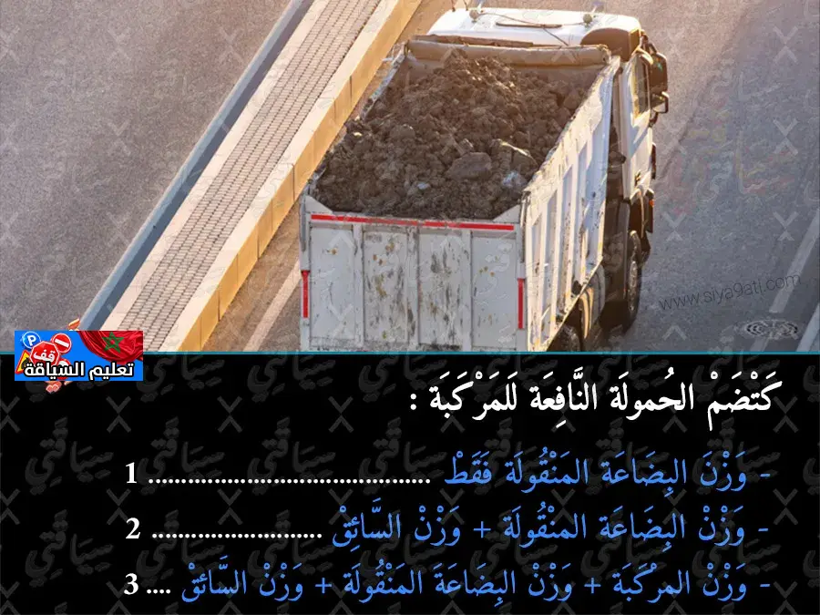
بيّن الجواب
الجواب الصحيح: 2
الحمولة النافعة للمركبة (La charge utile) هي الوزن الإجمالي المسموح به للبضائع المنقولة زائد وزن السائق فقط. يعني: إلى بغينا نحسبو أقصى وزن قانوني مسموح به يمكن نحملوه في الشاحنة أو العربة، خاصنا ندمجو وزن البضاعة المنقولة مع وزن السائق. هذا هو المفهوم اللي كاتستعملو مدونة السير المغربية وجميع وثائق النقل المهني. 📚 المرجع القانوني: حسب المادة 4 من المرسوم رقم 2.10.421 المتعلق بتحديد الشروط التقنية للمركبات: الحمولة النافعة هي أقصى وزن يمكن تحميله قانونيا في المركبة، وتشمل وزن البضاعة ووزن السائق... وكذلك نفس التعريف في شهادة التسجيل (البطاقة الرمادية) ديال جميع المركبات بالمغرب. الجواب الصحيح هو رقم 2، وزن البضاعة المنقولة + وزن السائق.
السؤال 10
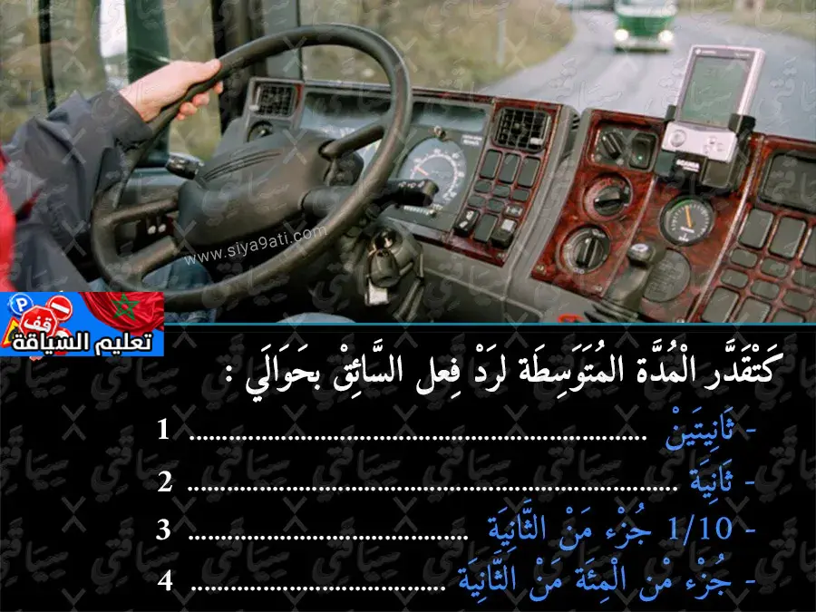
بيّن الجواب
الجواب الصحيح: 2
مدة رد الفعل: هي المدة الزمنية اللي كتحتاجها من اللحظة اللي كتشوف فيها الخطر حتى تدير رد فعل (مثلاً حتى تدير الفرملة أو تحول المقود). حسب الدراسات والمعايير الدولية وأيضاً مدونة السير المغربية، المدة المتوسطة لرد فعل السائق هي حوالي ثانية واحدة (1 ثانية). الجواب الصحيح هو رقم 2.
السؤال 11
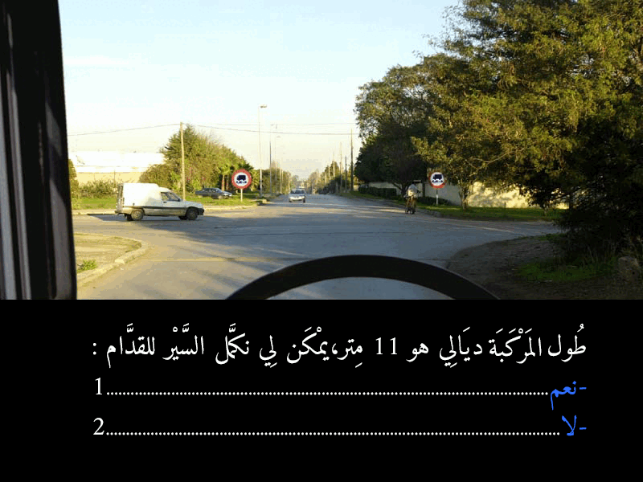
بيّن الجواب
الجواب الصحيح: 2
في الطريق في الأمام كيف كايبان كاين علامة ممنوع المرور على العربات التي يتجاوز طولها 10 أمتار. هاد العلامة كتحدد طول المركبات المسموح لها المرور (مثلاً: ممنوع مرور العربات اللي كتفوت 10 أمتار). إذا كنت تسوق عربة أو شاحنة طولها 11 متر، وشفتي هاد العلامة فممنوع المرور فالإتجاه اللي فيه هاد العلامة. مايمكنش ليك تدوز من داك الطريق. هاد العلامة كتكون غالباً في الممرات الضيقة أو فوق القناطر أو في بعض الأزقة، والهدف منها هو تنظيم السير وحماية البنية التحتية وضمان سلامة الجميع. الجواب الصحيح هو رقم 2.
السؤال 12
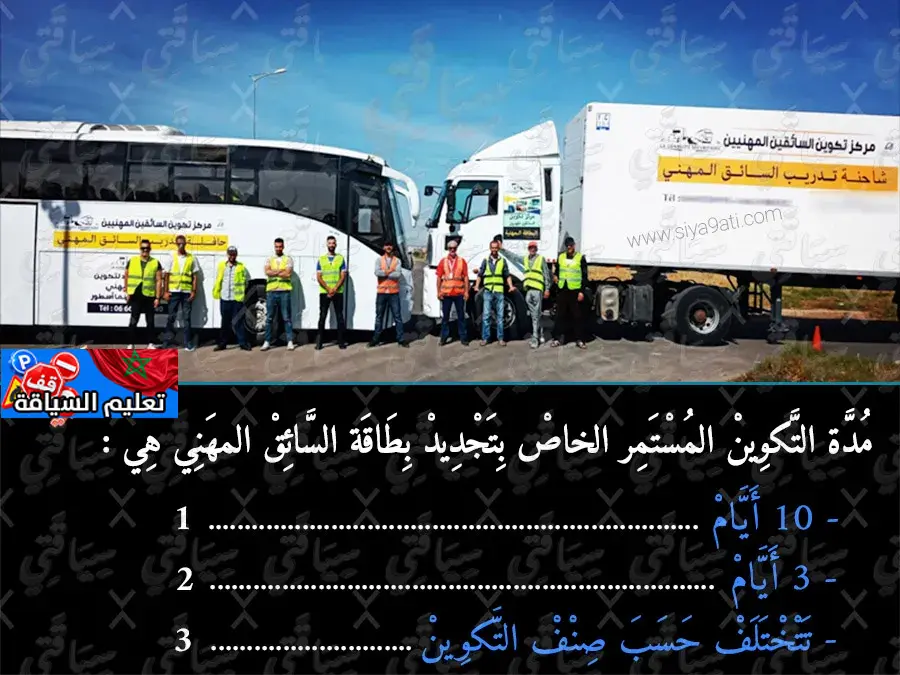
بيّن الجواب
الجواب الصحيح: 3
مدة التكوين المستمر الخاص بتجديد بطاقة السائق المهني ماشي مدة ثابتة لجميع الأصناف، بل كتختلف حسب صنف الرخصة: مثلاً، سائقي النقل العمومي للأشخاص (الحافلات، الطاكسيات...) عندهم تكوين مدته مختلفة عن سائقي نقل البضائع (الشاحنات). كل صنف عندو عدد ساعات وأيام محددة قانونياً حسب المرسوم الوزاري المتعلق بتكوين السائقين المهنيين. الهدف من هذا التنوع هو أن كل نوع من السياقة المهنية عندو متطلبات ومسؤوليات مختلفة. مدة التكوين المستمر عند التجديد ليست موحدة، بل تتغير حسب نوع المركبة وصنف الرخصة، لذلك جواب السؤال هو رقم 3.
السؤال 13
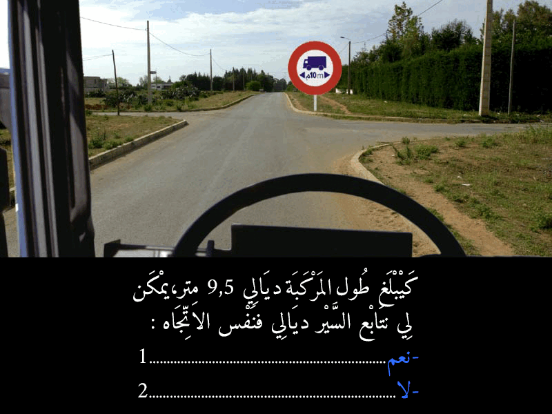
بيّن الجواب
الجواب الصحيح: 1
نعم، إذا كان طول المركبة ديالك 9.5 متر، فيمكن لك تتابع السير عادي في نفس الاتجاه، لأن العلامة اللي كتشير للمنع كتمنع فقط على العربات اللي كيتجاوز طولها 10 أمتار. يعني العربات اللي طولها أقل من 10 أمتار (بحال 9.5 متر) معنيينش بالمنع وكيقدروا يدوزو. الجواب الصحيح هو رقم 1.
السؤال 14
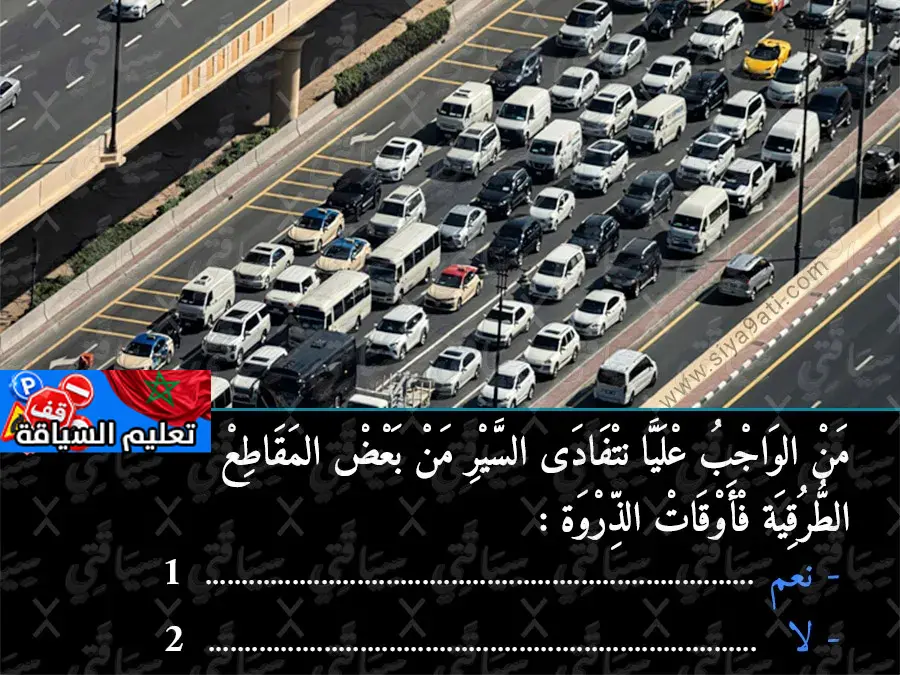
بيّن الجواب
الجواب الصحيح: 1
من المهم جداً تجنّب السير في بعض المقاطع الطُّرُقية خلال أوقات الذروة، خصوصاً في المدن الكبرى أو الطرق السريعة، لأن الحركة كتكون مكتظة بزاف، وهذا كيخلّيك تعاني من التأخيرات، الضغط، أو حتى الحوادث بسبب الزحام. مدونة السير المغربية كتوصي السائقين ينظموا رحلاتهم، ويحاولوا يختاروا الأوقات اللي فيها حركة قليلة باش يسهّلوا على راسهم السياقة ويوفروا الوقت ويحافظوا على السلامة ديالهم وديال الآخرين. لهذا، الجواب الصحيح هو نعم، من الواجب نحاولوا نتفادوا السير في بعض المقاطع وقت الزحام (أوقات الذروة)، إذا كان ممكن. الجواب الصحيح هو رقم 1.
السؤال 15
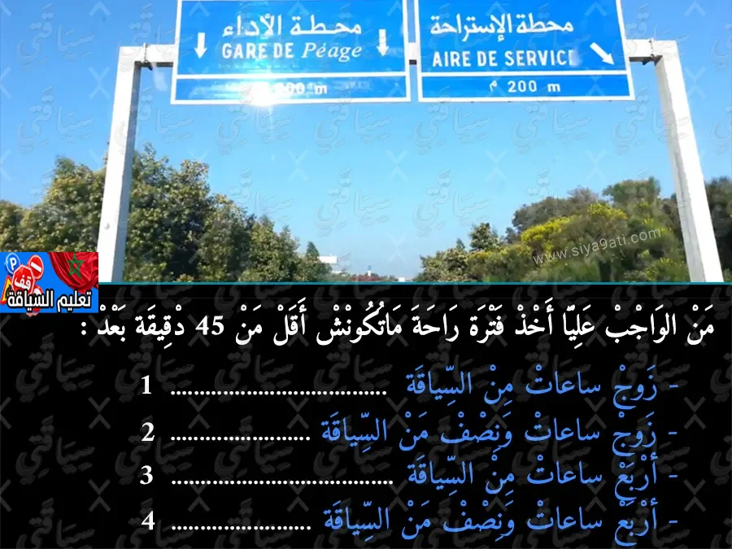
بيّن الجواب
الجواب الصحيح: 4
حسب مدونة السير المغربية وقانون النقل، السائقين المهنيين (وخاصة سائقي الشاحنات والحافلات) عندهم قانون خاص بالراحة. القاعدة واضحة: من الواجب على السائق ياخذ فترة راحة لا تقل عن 45 دقيقة بعد أربع ساعات ونصف (4 ساعات ونصف) من السياقة المتواصلة. هاد القاعدة كتساعد السائق باش يتهنّى من التعب والإرهاق، وتكون قيادته آمنة وبدون مخاطر. التعب والعياء كيزيدو من خطر الحوادث، لذلك القانون فرض هاد الوقت كحد أقصى قبل ما تدوز الراحة. الجواب الصحيح هو 4: من بعد أربع ساعات ونصف من السياقة، خاصك توقف وترتاح على الأقل 45 دقيقة. إذا درتي أقل من هاد الوقت ديال الراحة، كتكون مخالف القانون وكتعرّض راسك والمستعملين الآخرين للطريق للخطر. الجواب الصحيح هو رقم 4.
السؤال 16
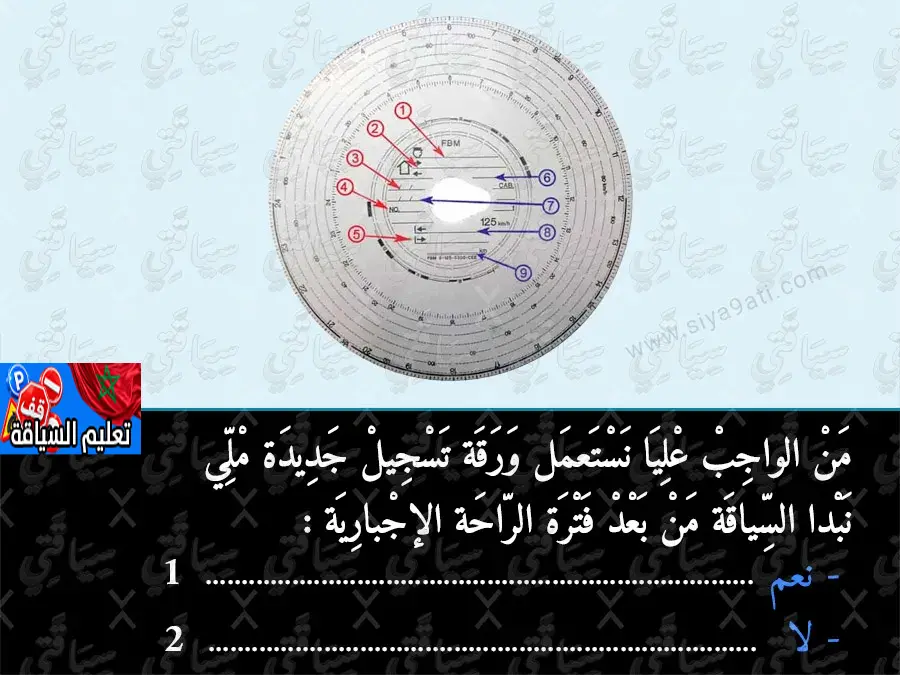
بيّن الجواب
الجواب الصحيح: 1
نعم، من الواجب تبدل ورقة تسجيل جديدة (ديسك الطاكوغراف) من بعد كل فترة راحة إجبارية طويلة (مثلاً من بعد المبيت أو الراحة اليومية). السبب هو أنه خاص كل يوم عمل جديد يكون عندو ورقة تسجيل جديدة باش يبان بوضوح عدد ساعات العمل والسياقة والراحة. القانون كيلزم السائقين المهنيين يسجلو كل نهار في ورقة جديدة لضمان المراقبة الصحيحة وتفادي أي مشاكل أو مخالفات في المراقبة الطرقية. الخلاصة: بعد الراحة الإلزامية (مثلاً المبيت)، خاص تبدل ورقة تسجيل الطاكوغراف بورقة جديدة ملي تعاود تبدا تخدم وتسوق الشاحنة ديالك. الجواب الصحيح هو رقم 1.
السؤال 17
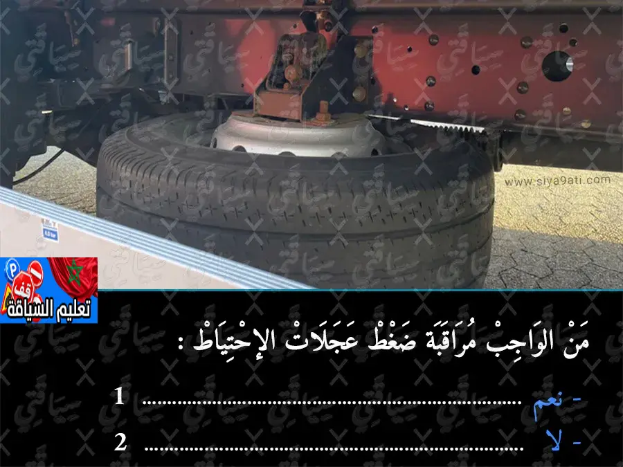
بيّن الجواب
الجواب الصحيح: 1
من الواجب دائماً مراقبة ضغط العجلات الاحتياطية، بحال باقي العجلات اللي كتركب فالشاحنة. العجلة الاحتياطية كتحتاج تكون دائما واجدة للاستعمال، لأنه في حالة وقع لك عطب في الطريق واضطرّيتي تبدّل العجلة، خاصك تلقى العجلة الاحتياطية فيها الضغط المناسب وماشي ناقصة أو خاوية. إذا ما كنتش كتراقب ضغط العجلة الاحتياطية، ممكن تلقاها غير صالحة وقت الحاجة، وهذا غادي يعرّضك للخطر أو يعرقل رحلتك. الخلاصة: مراقبة ضغط جميع العجلات، بما فيها العجلة الاحتياطية، أمر ضروري للسلامة ديالك والسلامة ديال الركاب والطريق. الجواب الحيح هو رقم 1.
السؤال 18
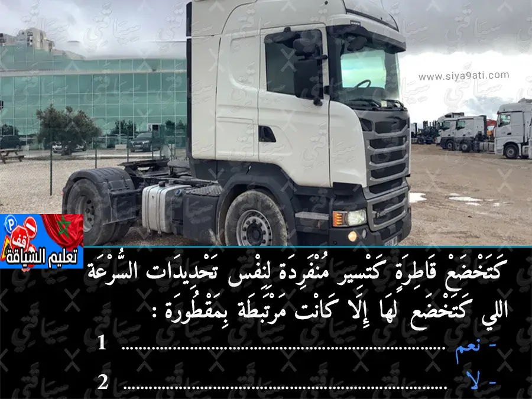
بيّن الجواب
الجواب الصحيح: 2
القاطرة (أي الرأس ديال الشاحنة اللي كيجبد المقطورة) إلى كانت كتمشي بوحدها (يعني بلا مقطورة)، ماشي ضروري تخضع لنفس تحديدات السرعة اللي كتنطبق على مجموعة القاطرة والمقطورة مع بعض. مدونة السير المغربية كتفرّق بين -قاطر منفرد- و-مجموعة مركبات-: إذا كانت القاطرة كتسير منفردة (ما مربوطة بحتى مقطورة)، عندها تحديد سرعة خاص بها كيكون غالبا بحال الشاحنات العادية. إذا كانت مربوطة مع مقطورة، هنا كتنطبق عليها قوانين السرعة ديال المجموعات اللي كيكون التحديد فيها غالبا أقل. الخلاصة: قاطر منفرد ماشي بحال قاطر مرتبطة بمقطورة. تحديدات السرعة كاتبدل حسب الحالة. الجواب الصحيح هو رقم 2.
السؤال 19
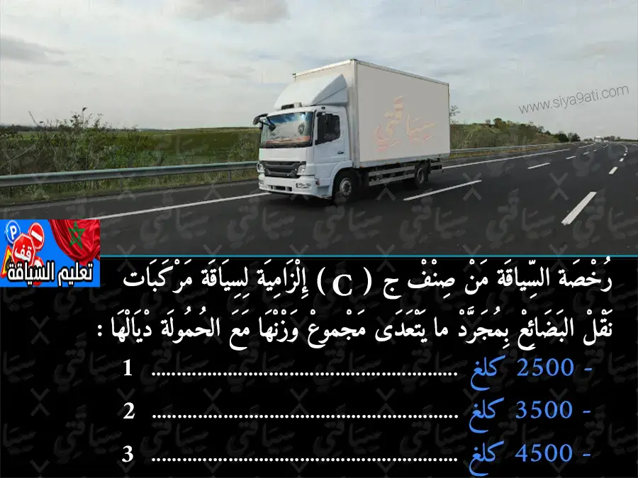
بيّن الجواب
الجواب الصحيح: 2
رخصة السياقة من صنف ج (C) مطلوبة بشكل إجباري لأي سائق بغا يسوق شاحنة أو مركبة نقل البضائع اللي مجموع الوزن ديالها مع الحمولة كيتجاوز 3500 كلغ (3.5 طن). أقل من 3.5 طن: تقدر تسوقها برخصة صنف ب (B). أكثر من 3.5 طن: خاص يكون عندك رخصة ج (C). هذا هو الحد الفاصل حسب مدونة السير المغربية. الجواب الصحيح هو رقم 2.
السؤال 20
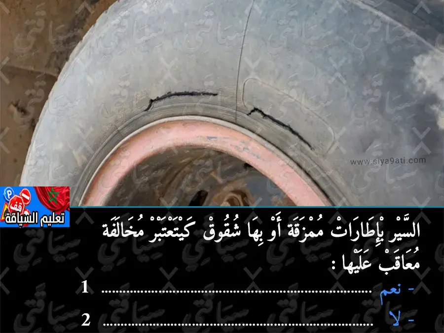
بيّن الجواب
الجواب الصحيح: 1
السير بإطارات (عجلات) ممزقة أو فيها تشققات أو عيوب خطيرة يُعتبر مخالفة خطيرة في قانون السير المغربي. لأن الإطارات جزء أساسي من السلامة، وأي عطب فيها كيعرّض السائق وباقي مستعملي الطريق للخطر. حسب مدونة السير المغربية، مراقبة حالة العجلات ضرورية، والسير بعجلات تالفة أو فيها شقوق يعاقب عليه القانون (غرامة + إمكانية توقيف المركبة). الخلاصة: ديما خاص تراقب حالة العجلات قبل ما تسوق، وإذا لاحظتي فيها أي تمزق أو شقوق خاصك تبدلها قبل السير، وإلا غادي تكون معرض للمخالفة والعقوبة. الجواب الصحيح هو رقم 1.